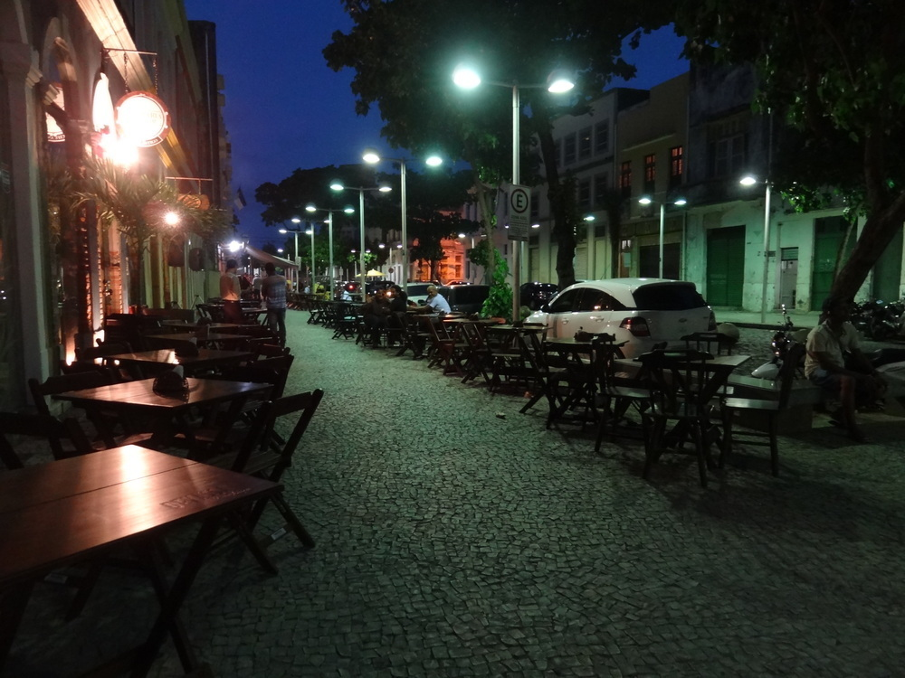

O Recife antigo como é chamado o Centro da capital Prnambucana, é um lugar de passeios que contam a história da cidade.
Passando pelo Marco zero, uma das paradas obrigatórias de todo turísta é o Museu de Artesanato de Pernambuco, onde você pode conhecer o artesanato de artistas locais e de todo o estado.
A Rua do Bom Jesus, é uma das ruas mais antigas de Recife, lá você vai encontrar uma feirinha de atesanato, e também poderá apreciar comidas típicas de Pernambuco, pois o local conta com barzinhos e restaurantes.
Seguindo pela mesma rua, você poderá conhecer o Centro Cultural Judaico e a Embaixada de Pernambuco - Bonecos Gigantes de Olinda.

A Rua da Moeda é o lugar certo para descontrair a noite, a rua conta com vários barzinhos com música ao vivo. A escultura de Chico Science fica lá.
O Recife Antigo conta com inúmeros outros pontos turísticos para serem visitados e apreciado, caso sinta interesse em conhecer mais, clique no link abaixo.